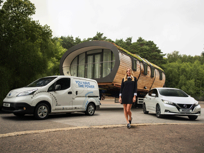

Green Unit: Modular Prefab Eco Buildings
High peformance design for durability and comfort using high efficiency construction.
- Type: Construction, Residential, Professional Work
- Date: Winter 2017 - Winter 2018
- Location: Oxford, England, UK
- Size: 140 sf per pod, configurable layouts
- Role: Designer, Architect
Work done for a company that builds modular, high-performance, transportable buildings for a wide variety of applications. My work was carried out at multiple levels of design ranging from market demand and client needs to building layouts, construction details, and assembly processes. Initial product design and prototyping for a new building configuration was carried out. Other assignments included an audit and overhaul of the building components, organizing assembly processes with quality control, and solving maintenance issues in buildings that had already been installed along with determining improvements for use in future projects. This experience has provided an interesting look into the detailed construction end of buildings which differs from traditional architectural practice, dealing with all the specifics of fasteners, hardware, installation procedures, and sequencing. This provided a different mindset from the one-off nature of conventional building construction, focusing on designing for durability, efficiency, and repeatability in the workshop and in the finished product. I hope that this experience and insight will help me see things in a different light in my future architectural work.

Nissan Leaf Electronic Vehicle Advertisement featuring Green Unit ARC building.
Concepts, Design, Coordination
Design concepts for homes, offices, vacation rentals, garden studios, fitness rooms, and more.
Exploded view of ARC pod construction.
Construction details and assembly processes.
Machining
Building components are all ordered, fabricated in the workshop, or produced with automated CNC milling. Components are all made based on digital building files for accuracy and consistency across all production.
Assembly

Modules such as walls, floors, and roof sections are assembled in controlled conditions to ensure the quality and efficiency of production. All building modules are created in the order needed for the following buildup processes.
Buildup
Modules are arranged to form the building pods in the workshop. The only work that needs to be done on site is the final fitting of fixtures and finishes as well as any groundworks or landscaping.
Delivery
The building elements are designed to fit standard vehicle delivery methods and can be dropped off to the site with a crane for simple install. The buildings can also be shipped via containers for international projects or self-builders.